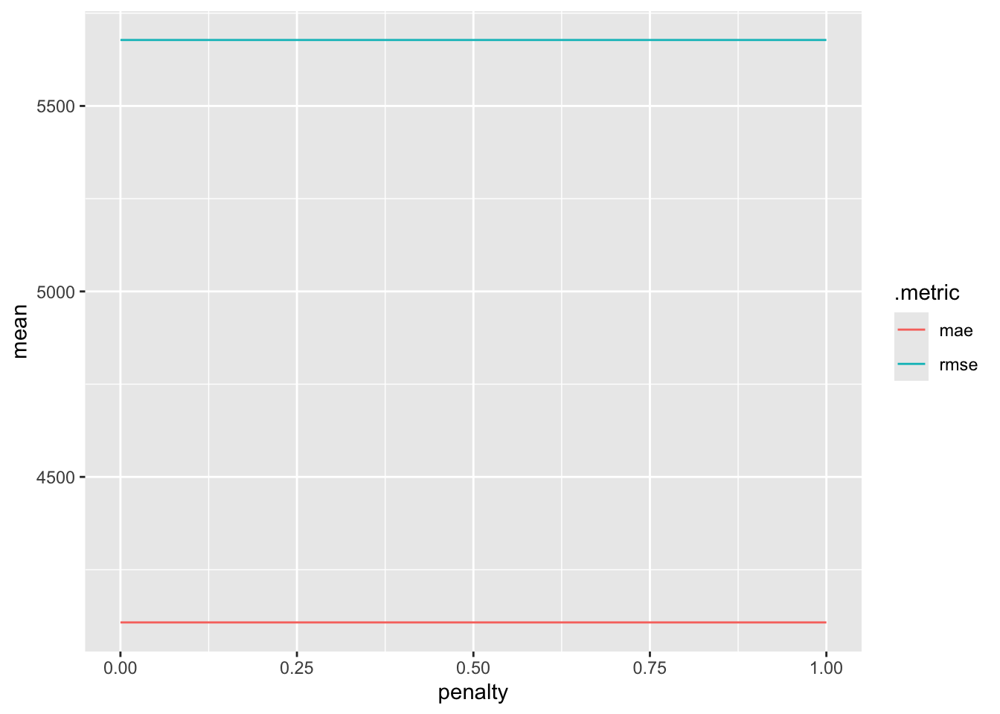
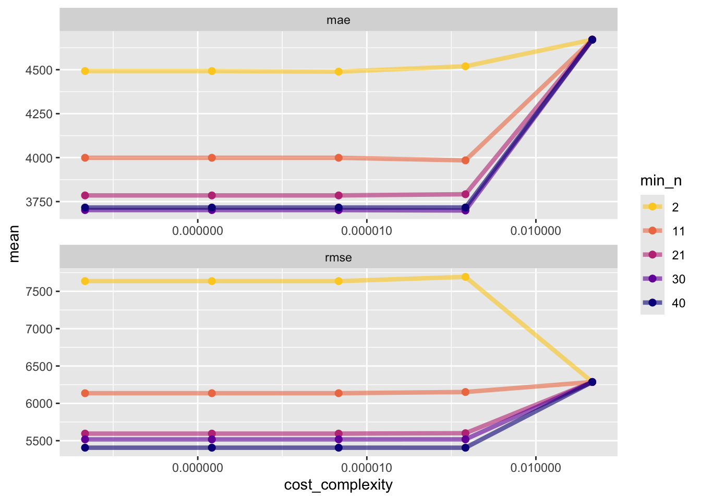
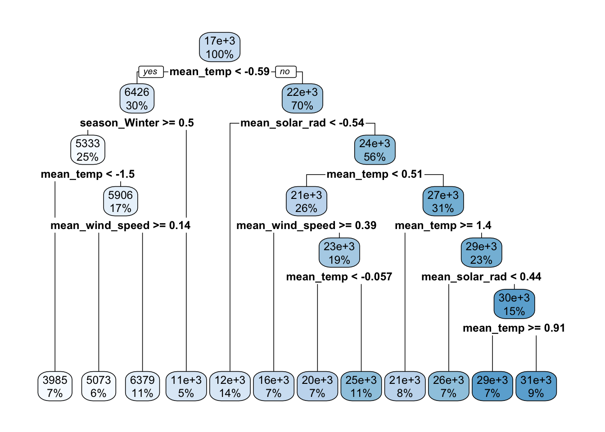
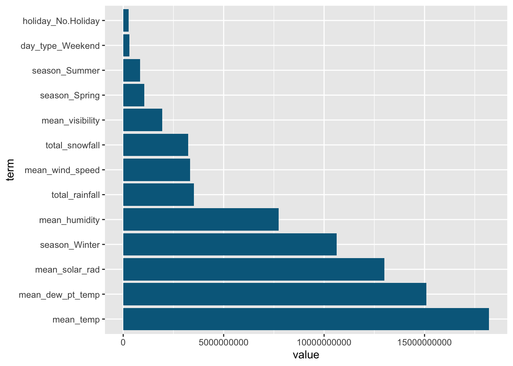
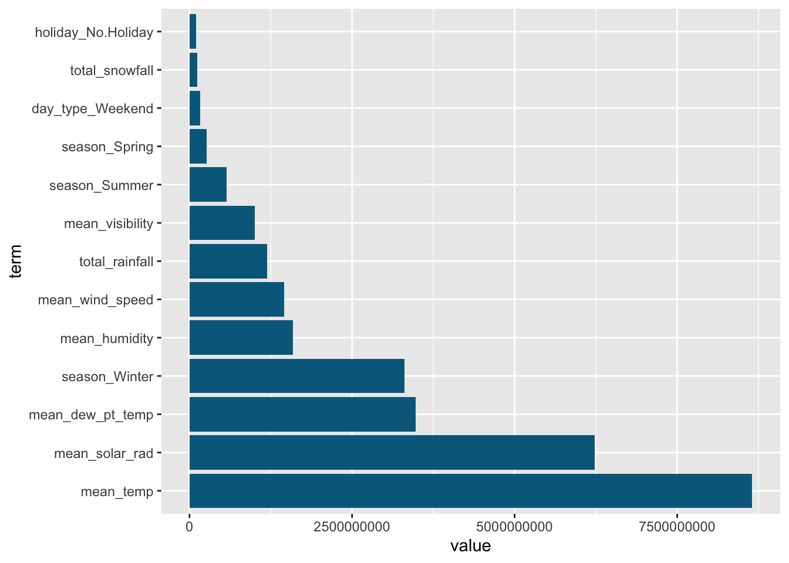

library(tidyverse)
library(tidymodels)
library(ggplot2)
library(baguette)
library(rpart.plot)
# suppress scientific notation
options(scipen=999)Homework 9: Modeling Practice
Import libraries
Read in data
df <- read_csv('SeoulBikeData.csv', locale = locale(encoding = 'ISO-8859-1'))Rows: 8760 Columns: 14
── Column specification ────────────────────────────────────────────────────────
Delimiter: ","
chr (4): Date, Seasons, Holiday, Functioning Day
dbl (10): Rented Bike Count, Hour, Temperature(°C), Humidity(%), Wind speed ...
ℹ Use `spec()` to retrieve the full column specification for this data.
ℹ Specify the column types or set `show_col_types = FALSE` to quiet this message.# View first few rows of data
head(df)# A tibble: 6 × 14
Date `Rented Bike Count` Hour `Temperature(°C)` `Humidity(%)`
<chr> <dbl> <dbl> <dbl> <dbl>
1 01/12/2017 254 0 -5.2 37
2 01/12/2017 204 1 -5.5 38
3 01/12/2017 173 2 -6 39
4 01/12/2017 107 3 -6.2 40
5 01/12/2017 78 4 -6 36
6 01/12/2017 100 5 -6.4 37
# ℹ 9 more variables: `Wind speed (m/s)` <dbl>, `Visibility (10m)` <dbl>,
# `Dew point temperature(°C)` <dbl>, `Solar Radiation (MJ/m2)` <dbl>,
# `Rainfall(mm)` <dbl>, `Snowfall (cm)` <dbl>, Seasons <chr>, Holiday <chr>,
# `Functioning Day` <chr>Data Cleaning
Convert ‘Date’ column to date type
Convert remaining 3 categorical variables to factors
Rename columns to be consistent & easy to use
df$Date <- dmy(df$Date)
df <- df |>
# convert categorical variables to factors
mutate(across(c('Seasons', 'Holiday', 'Functioning Day'), as.factor)) |>
# rename columns
rename('date' = 'Date',
'rented_bike_count' = 'Rented Bike Count',
'hour' = 'Hour',
'temp' = 'Temperature(°C)',
'humidity' = 'Humidity(%)',
'wind_speed' = 'Wind speed (m/s)',
'visibility' = 'Visibility (10m)',
'dew_pt_temp' = 'Dew point temperature(°C)',
'solar_rad' = 'Solar Radiation (MJ/m2)',
'rainfall' = 'Rainfall(mm)',
'snowfall' = 'Snowfall (cm)',
'season' = 'Seasons',
'holiday' = 'Holiday',
'functioning_day' = 'Functioning Day')Summarize variables across hours so that each day has one record
Calculate daily totals of rented bike count, rainfall, and snowfall
Calculate daily averages of all remaining weather related variables.
data <- df |>
group_by(date, season, holiday) |>
summarize(
across(
c(rented_bike_count, rainfall, snowfall),
~ sum(.x),
.names = 'total_{.col}'
),
across(
c(temp, humidity, wind_speed, visibility, dew_pt_temp, solar_rad),
~ mean(.x),
.names = 'mean_{.col}'),
.groups = 'drop')Predictive Modeling
Set the seed to ensure results are consistent & reproducible
set.seed(42)Prepare data for modeling
Split the data into a training and test set using 75% of the data for the training set
# put 75% of the data in the training set
data_split <- initial_split(data, prop = .75, strata = season)
# create data frames for the two sets
train <- training(data_split)
test <- testing(data_split)Create 10 fold cross validation split on the training data
There will be 26 observations per fold, except for the last fold, which will have 29 observations.
# set up 10 fold cross validation
train_10_fold <- vfold_cv(train, 10)Create recipe to use in models
rec <- recipe(total_rented_bike_count ~ ., data = train) |>
# create day of week variable
step_date(date, features = 'dow') |>
# convert to weekday/weekend factor
step_mutate(
day_type = factor(
if_else(date_dow %in% c('Sat', 'Sun'), 'Weekend', 'Weekday')
)
) |>
# remove date and intermediate date variable created by step_date
step_rm(date, date_dow) |>
# standardize numeric variables
step_normalize(all_numeric_predictors()) |>
step_dummy(season, holiday, day_type)LASSO Model
Create LASSO model instance and workflow
Use ‘penalty = tune()’ to indicate that we are going to be tuning the model
Use ‘mixture = 1’ to turn this into a LASSO model rather than elastic net
LASSO_spec <- linear_reg(penalty = tune(), mixture = 1) |>
set_engine('glmnet')
# workflow
LASSO_wkf <- workflow() |>
add_recipe(rec) |>
add_model(LASSO_spec)Fit tuned LASSO model & plot metrics across each fold
We know that each tuning value has the same RMSE, so use a small number of levels to reduce run time
LASSO_grid <- LASSO_wkf |>
tune_grid(resamples = train_10_fold,
grid = grid_regular(penalty(), levels = 10),
metrics = metric_set(rmse, mae))
# plot metrics
LASSO_grid |>
collect_metrics() |>
ggplot(aes(penalty, mean, color = .metric)) +
geom_line()
Since all of the models perform the same, we will just select the first one to finalize
LASSO_best <- LASSO_grid |>
collect_metrics() |>
slice(1)Finalize the workflow fit the best model to the entire training set
LASSO_final <- LASSO_wkf |>
finalize_workflow(LASSO_best) |>
last_fit(data_split, metrics = metric_set(rmse, mae))
LASSO_final |>
collect_metrics()# A tibble: 2 × 4
.metric .estimator .estimate .config
<chr> <chr> <dbl> <chr>
1 rmse standard 6228. pre0_mod0_post0
2 mae standard 4127. pre0_mod0_post0Regression Tree Model
Create Regression Tree model instance and workflow
The first run of this model using tune() for all 3 parameters of decision_tree() took a long time to run and there was no improvement when using a tree depth higher than 8. Based on these results, I specified the value of tree depth to reduce run time.
reg_tree <-
decision_tree(
tree_depth = 8,
min_n = tune(),
cost_complexity = tune()) |>
set_engine('rpart') |>
set_mode('regression')
# workflow
reg_tree_wkf <- workflow() |>
add_recipe(rec) |>
add_model(reg_tree)Fit the workflow on CV folds
Use 5 of each tuning parameter (cost_complexity and min_n)
reg_tree_fit <- reg_tree_wkf |>
tune_grid(resamples = train_10_fold,
grid = grid_regular(min_n(),
cost_complexity(),
levels = c(5, 5)),
metrics = metric_set(rmse, mae))
# view metrics for each fold
reg_tree_fit |>
collect_metrics(type = 'wide') |>
arrange(rmse, mae)# A tibble: 25 × 5
cost_complexity min_n .config mae rmse
<dbl> <int> <chr> <dbl> <dbl>
1 0.000562 40 pre0_mod20_post0 3716. 5406.
2 0.0000000001 40 pre0_mod05_post0 3716. 5406.
3 0.0000000178 40 pre0_mod10_post0 3716. 5406.
4 0.00000316 40 pre0_mod15_post0 3716. 5406.
5 0.0000000001 30 pre0_mod04_post0 3702. 5518.
6 0.0000000178 30 pre0_mod09_post0 3702. 5518.
7 0.00000316 30 pre0_mod14_post0 3702. 5518.
8 0.000562 30 pre0_mod19_post0 3699. 5518.
9 0.0000000001 21 pre0_mod03_post0 3785. 5595.
10 0.0000000178 21 pre0_mod08_post0 3785. 5595.
# ℹ 15 more rowsPlot metrics
There is significant improvement in RMSE and MAE between min_n = 2 and min_n = 11. After that, we see much smaller differences between values of min_n with min_n = 40 having the lowest RMSE and MAE. We also see an uptick in RMSE and MAE between the values of 0.00001 and 0.01 for cost complexity (except for the RMSE from the model with min_n = 2, where RMSE falls between those two values).
reg_tree_fit |>
collect_metrics() |>
mutate(min_n = factor(min_n)) |>
ggplot(aes(cost_complexity, mean, color = min_n)) +
geom_line(size = 1.5, alpha = 0.6) +
geom_point(size = 2) +
facet_wrap(~ .metric, scales = 'free', nrow = 2) +
scale_x_log10(labels = scales::label_number()) +
scale_color_viridis_d(option = 'plasma', begin = .9, end = 0)Warning: Using `size` aesthetic for lines was deprecated in ggplot2 3.4.0.
ℹ Please use `linewidth` instead.
Select the model with the lowest RMSE to be finalized
reg_tree_best <- reg_tree_fit |>
select_best(metric = 'rmse')
reg_tree_best# A tibble: 1 × 3
cost_complexity min_n .config
<dbl> <int> <chr>
1 0.000562 40 pre0_mod20_post0Finalize the workflow with the best model and fit to the entire training set
reg_tree_final <- reg_tree_wkf |>
finalize_workflow(reg_tree_best) |>
last_fit(data_split, metrics = metric_set(rmse, mae))
reg_tree_final |>
collect_metrics()# A tibble: 2 × 4
.metric .estimator .estimate .config
<chr> <chr> <dbl> <chr>
1 rmse standard 6765. pre0_mod0_post0
2 mae standard 4801. pre0_mod0_post0Bagged Tree Model
Create Bagged Tree model instance and workflow
Tuning all 3 parameters takes a very long time to run, so I ran it once to see what the best parameters for tree_depth and min_n were and then specified the values based off of those results.
bag_spec <- bag_tree(tree_depth = 10,
min_n = 6,
cost_complexity = tune()) |>
set_engine('rpart') |>
set_mode('regression')
# workflow
bag_wkf <- workflow() |>
add_recipe(rec) |>
add_model(bag_spec)Fit model to CV folds & view metrics across each fold
bag_fit <- bag_wkf |>
tune_grid(resamples = train_10_fold,
grid = grid_regular(cost_complexity(), levels = 10),
metrics = metric_set(rmse, mae))Registered S3 method overwritten by 'butcher':
method from
as.character.dev_topic genericsbag_fit |>
collect_metrics(type = 'wide') |>
arrange(rmse, mae)# A tibble: 10 × 4
cost_complexity .config mae rmse
<dbl> <chr> <dbl> <dbl>
1 0.000000001 pre0_mod02_post0 3193. 4885.
2 0.0000001 pre0_mod04_post0 3210. 4950.
3 0.00000001 pre0_mod03_post0 3243. 4984.
4 0.000001 pre0_mod05_post0 3195. 5005.
5 0.001 pre0_mod08_post0 3428. 5107.
6 0.0001 pre0_mod07_post0 3381. 5177.
7 0.0000000001 pre0_mod01_post0 3418. 5209.
8 0.00001 pre0_mod06_post0 3380. 5221.
9 0.01 pre0_mod09_post0 3694. 5457.
10 0.1 pre0_mod10_post0 4615. 6209.Select the model with the lowest RMSE to finalize
bag_best <- bag_fit |>
select_best(metric = 'rmse')
bag_best# A tibble: 1 × 2
cost_complexity .config
<dbl> <chr>
1 0.000000001 pre0_mod02_post0Finalize the workflow using the best model and fit on the full training set
bag_final <- bag_wkf |>
finalize_workflow(bag_best) |>
last_fit(data_split, metrics = metric_set(rmse, mae))
bag_final |>
collect_metrics()# A tibble: 2 × 4
.metric .estimator .estimate .config
<chr> <chr> <dbl> <chr>
1 rmse standard 6005. pre0_mod0_post0
2 mae standard 3710. pre0_mod0_post0Random Forest Model
Create Random Forest model instance and workflow
Use importance = ‘impurity’ to request variable importance calculation
Set all three parameter options to ‘tune()’
rf_spec <-
rand_forest(mtry = tune(),
min_n = tune(),
trees = tune()) |>
set_engine('ranger', importance = 'impurity') |>
set_mode('regression')
rf_wkf <- workflow() |>
add_recipe(rec) |>
add_model(rf_spec)Fit model to CV folds & view metrics
rf_fit <- rf_wkf |>
tune_grid(
resamples = train_10_fold,
grid = 10,
metrics = metric_set(rmse, mae))i Creating pre-processing data to finalize 1 unknown parameter: "mtry"rf_fit |>
collect_metrics(type = 'wide') |>
arrange(rmse, mae)# A tibble: 10 × 6
mtry trees min_n .config mae rmse
<int> <int> <int> <chr> <dbl> <dbl>
1 5 1111 2 pre0_mod04_post0 3226. 4850.
2 11 889 6 pre0_mod09_post0 3166. 4876.
3 9 2000 14 pre0_mod07_post0 3257. 4923.
4 10 223 31 pre0_mod08_post0 3470. 5108.
5 13 1333 27 pre0_mod10_post0 3423. 5126.
6 7 1555 40 pre0_mod06_post0 3653. 5239.
7 3 445 35 pre0_mod03_post0 3894. 5384.
8 2 1777 23 pre0_mod02_post0 3953. 5440.
9 1 667 18 pre0_mod01_post0 4893. 6202.
10 6 1 10 pre0_mod05_post0 4394. 6625.Select the model with the lowest RMSE to finalize
rf_best <- rf_fit |>
select_best(metric = 'rmse')
rf_best# A tibble: 1 × 4
mtry trees min_n .config
<int> <int> <int> <chr>
1 5 1111 2 pre0_mod04_post0Finalize workflow for the best model and fit to the full training set
rf_final <- rf_wkf |>
finalize_workflow(rf_best) |>
last_fit(data_split, metrics = metric_set(rmse, mae))
rf_final |>
collect_metrics()# A tibble: 2 × 4
.metric .estimator .estimate .config
<chr> <chr> <dbl> <chr>
1 rmse standard 5613. pre0_mod0_post0
2 mae standard 3572. pre0_mod0_post0MLR Model
Create the recipe we used to create the best MLR model in homework 8
mlr_rec <- rec |>
step_interact(~ starts_with('season_'):starts_with('holiday_') +
starts_with('season_'):mean_temp +
mean_temp:total_rainfall) |>
step_poly(
all_numeric_predictors(),
# do not add quadratic term for dummy variables
-starts_with('season_'),
-starts_with('holiday_'),
-starts_with('day_type'),
degree = 2
)Create model instance and workflow
mlr_spec <- linear_reg() |>
set_engine('lm')
mlr_wkf <-
workflow() |>
add_model(mlr_spec) |>
add_recipe(mlr_rec)Fit model on CV folds and view metrics
# fit model using 10 fold CV
mlr_fit <- mlr_wkf |>
fit_resamples(
resamples = train_10_fold,
metrics = metric_set(rmse, mae)
)
# view metrics
collect_metrics(mlr_fit, type = 'wide') |>
arrange(rmse, mae)# A tibble: 1 × 3
.config mae rmse
<chr> <dbl> <dbl>
1 pre0_mod0_post0 3273. 5197.Fit the model to the entire training set and view metrics
MLR_final <- mlr_wkf |>
last_fit(data_split, metrics = metric_set(rmse, mae))
MLR_final |>
collect_metrics()# A tibble: 2 × 4
.metric .estimator .estimate .config
<chr> <chr> <dbl> <chr>
1 rmse standard 5861. pre0_mod0_post0
2 mae standard 3330. pre0_mod0_post0Model Comparison
Compare MAE and RMSE for each model
The random forest model has the lowest RMSE out of all of the models and the MLR model has the lowest MAE out of all the models.
Based on these results, I will choose the random forest model as the best.
rbind(
MLR_final |>
collect_metrics(type = 'wide') |>
mutate(Model = 'MLR', .before = 'rmse'),
LASSO_final |>
collect_metrics(type = 'wide') |>
mutate(Model = 'LASSO', .before = 'rmse'),
reg_tree_final |>
collect_metrics(type = 'wide') |>
mutate(Model = 'TREE', .before = 'rmse'),
bag_final |>
collect_metrics(type = 'wide') |>
mutate(Model = 'BAGGED', .before = 'rmse'),
rf_final |>
collect_metrics(type = 'wide') |>
mutate(Model = 'RF', .before = 'rmse')
) |>
arrange(rmse, mae)# A tibble: 5 × 4
.config Model rmse mae
<chr> <chr> <dbl> <dbl>
1 pre0_mod0_post0 RF 5613. 3572.
2 pre0_mod0_post0 MLR 5861. 3330.
3 pre0_mod0_post0 BAGGED 6005. 3710.
4 pre0_mod0_post0 LASSO 6228. 4127.
5 pre0_mod0_post0 TREE 6765. 4801.Model Summaries
LASSO Model coefficient table
LASSO_final |>
extract_fit_parsnip() |>
tidy()
Attaching package: 'Matrix'The following objects are masked from 'package:tidyr':
expand, pack, unpackLoaded glmnet 4.1-10# A tibble: 14 × 3
term estimate penalty
<chr> <dbl> <dbl>
1 (Intercept) 17665. 0.0000000001
2 total_rainfall -2011. 0.0000000001
3 total_snowfall -380. 0.0000000001
4 mean_temp 0 0.0000000001
5 mean_humidity -216. 0.0000000001
6 mean_wind_speed -1236. 0.0000000001
7 mean_visibility -204. 0.0000000001
8 mean_dew_pt_temp 2419. 0.0000000001
9 mean_solar_rad 4002. 0.0000000001
10 season_Spring -4055. 0.0000000001
11 season_Summer -449. 0.0000000001
12 season_Winter -7945. 0.0000000001
13 holiday_No.Holiday 3265. 0.0000000001
14 day_type_Weekend -1865. 0.0000000001MLR Model coefficient table
MLR_final |>
extract_fit_parsnip() |>
tidy()# A tibble: 30 × 5
term estimate std.error statistic p.value
<chr> <dbl> <dbl> <dbl> <dbl>
1 (Intercept) 15610. 2672. 5.84 0.0000000164
2 season_Spring 203. 3912. 0.0519 0.959
3 season_Summer 24232. 5397. 4.49 0.0000110
4 season_Winter -898. 4823. -0.186 0.853
5 holiday_No.Holiday 6036. 2356. 2.56 0.0110
6 day_type_Weekend -1994. 698. -2.86 0.00466
7 season_Spring_x_holiday_No.Holiday -3631. 3961. -0.917 0.360
8 season_Summer_x_holiday_No.Holiday -2862. 4250. -0.673 0.501
9 season_Winter_x_holiday_No.Holiday -4358. 3376. -1.29 0.198
10 season_Spring_x_mean_temp 6884. 1969. 3.50 0.000560
# ℹ 20 more rowsPlot of Regression Tree model final fit
extract_fit_engine(reg_tree_final) |>
rpart.plot(roundint = FALSE)
Bagged Tree Model variable importance plot
Temperature is the strongest predictor by far, which makes sense when looking at rented bike counts.
Dew point and solar radiation are higher in the ranking than I anticipated, but it makes sense since riding bikes is more common in dry, sunny weather.
I am also surprised by the difference in importance between the seasons. Winter is much more valuable as a predictor than spring and summer are.
bag_extract <- extract_fit_engine(bag_final)
bag_extract$imp |>
mutate(term = factor(term, levels = term)) |>
ggplot(aes(x = term, y = value)) +
geom_bar(stat ='identity', fill = 'deepskyblue4') +
coord_flip()
Random Forest Model variable importance plot
This result is pretty similar to the bagged tree model variable importance plot. Temperature is the most important predictor and ‘holiday_No.Holiday’ is the least important, as was the case with the bagged tree model. In this model, season_Winter and dew point temperature have switched places and total snowfall has a lower importance.
rf_extract <- extract_fit_engine(rf_final)
rf_imp <- enframe(rf_extract$variable.importance,
name = 'term',
value = 'value')
rf_imp |>
mutate(term = reorder(term, value, decreasing = TRUE)) |>
ggplot(aes(x = term, y = value)) +
geom_bar(stat ='identity', fill = 'deepskyblue4') +
coord_flip()
Overall best fit
The random forest model performed the best on the test set, so now we will fit it to the entire data set
rf <- rf_wkf |>
finalize_workflow(rf_best) |>
fit(data)
rf══ Workflow [trained] ══════════════════════════════════════════════════════════
Preprocessor: Recipe
Model: rand_forest()
── Preprocessor ────────────────────────────────────────────────────────────────
5 Recipe Steps
• step_date()
• step_mutate()
• step_rm()
• step_normalize()
• step_dummy()
── Model ───────────────────────────────────────────────────────────────────────
Ranger result
Call:
ranger::ranger(x = maybe_data_frame(x), y = y, mtry = min_cols(~5L, x), num.trees = ~1111L, min.node.size = min_rows(~2L, x), importance = ~"impurity", num.threads = 1, verbose = FALSE, seed = sample.int(10^5, 1))
Type: Regression
Number of trees: 1111
Sample size: 365
Number of independent variables: 13
Mtry: 5
Target node size: 2
Variable importance mode: impurity
Splitrule: variance
OOB prediction error (MSE): 25585155
R squared (OOB): 0.7568868